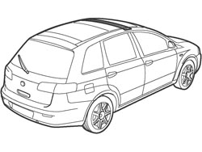
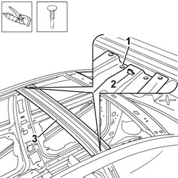
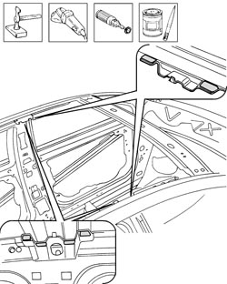
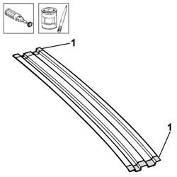
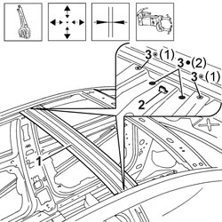
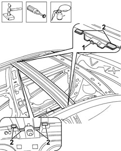

7210B18 R.R. ROOF PANEL SUPPORTING CROSSMEMBER
- Path
- Procedures > 72 PANELS AND FRAMES > 7210 REMOVING-REFITTING > 7210B STRUCTURAL ELEMENTS (CENTRE AND REAR SECTION) > 7210B18 R.R. ROOF PANEL SUPPORTING CROSSMEMBER
- Kind
- repair procedure (removal / refitting; the operation number is the code)
- Applies to
- all engines; all production periods
- Interactive page
- https://sloeber94.github.io/elrnDB-fCrm/en/#/194001226
Applies to: all engines; all production periods
 Removing
Removing
 Refitting
Refitting- Check that the components connected are not distorted by checking the bodyshell alignment measurements using suitable equipment (gauges, templates or jigs).
- Straighten the body as necessary.

Applies to: all engines; all production periods
1. Use the chamfering machine on the spot welds shown in the diagram.
2. Straighten the centering tab.
- Use the hammer and chisel and remove the spot welds chamfered previously.
3. Remove the roof supporting crossmember.

Applies to: all engines; all production periods
- Straighten the edges of the bodyshell using a hammer and dolly block.
- Remove the spot weld residues using a disc grinder.
- Use a rotary brush to clean the areas treated previously.
- Apply electro-galvanizing paint.

Applies to: all engines; all production periods
- Remove the anti-corrosion treatment using the rotary brush from both the inside and the outside of the replacement part shown in the diagram.
1. Apply electro-weldable paint to the points treated previously.

Applies to: all engines; all production periods
Refitting
Removing1. Position the crossmember correctly on the vehicle and secure it using self-locking clamps.
- Check that the alignment is perfect.
3. Use a spot welder in the areas shown in the diagram.

Applies to: all engines; all production periods
- Correct any distortions to the panel using a hammer and dolly block.
1. Attach the centering tab.
- Use a rotary brush to clean the areas welded previously.
2. Apply anti-oxidant protection to the areas involved in the welding.
- Seal the join lines between the replacement part and the vehicle.

Applies to: all engines; all production periods